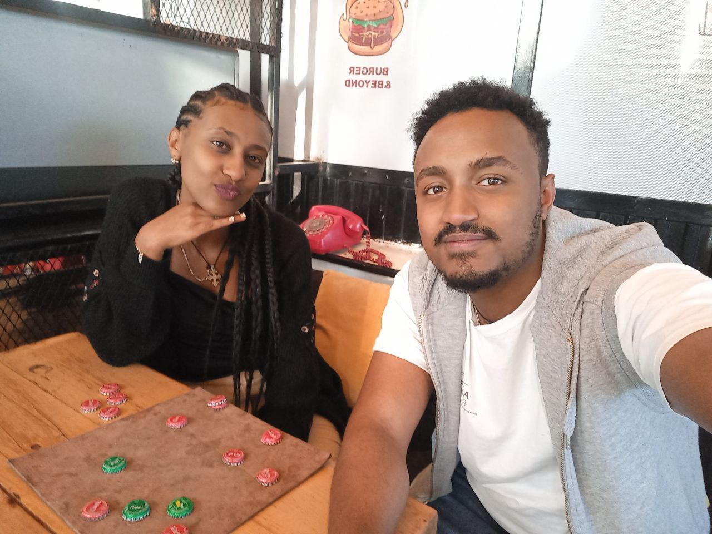
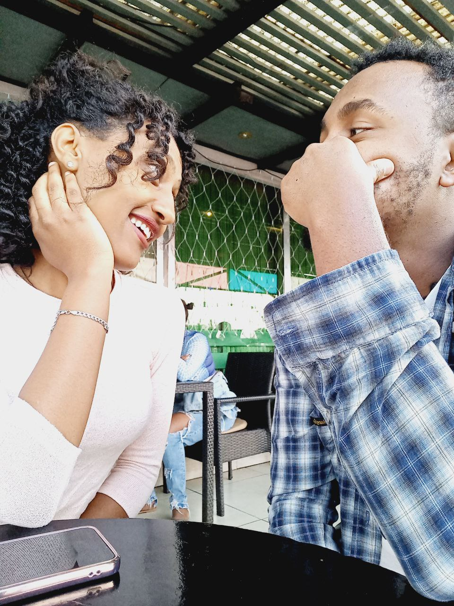
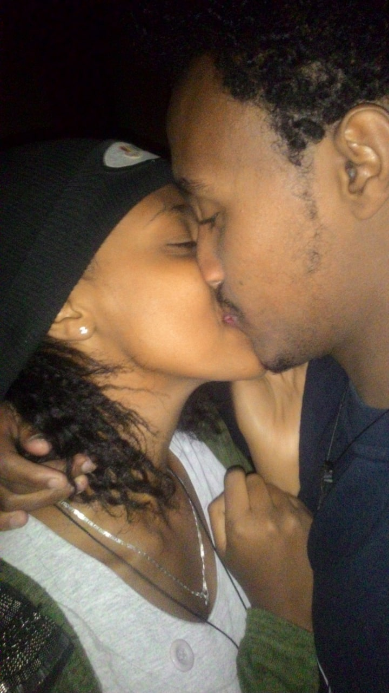
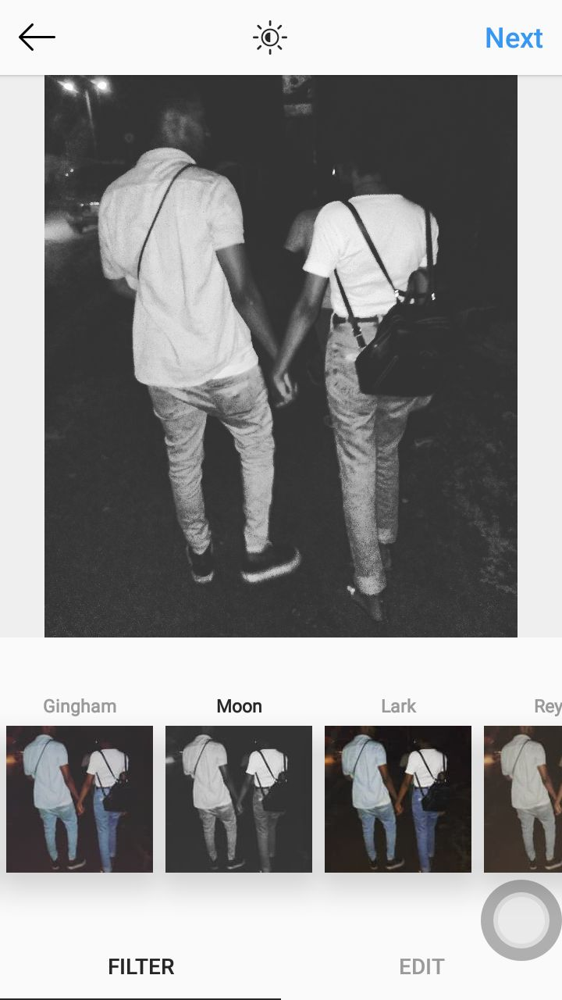
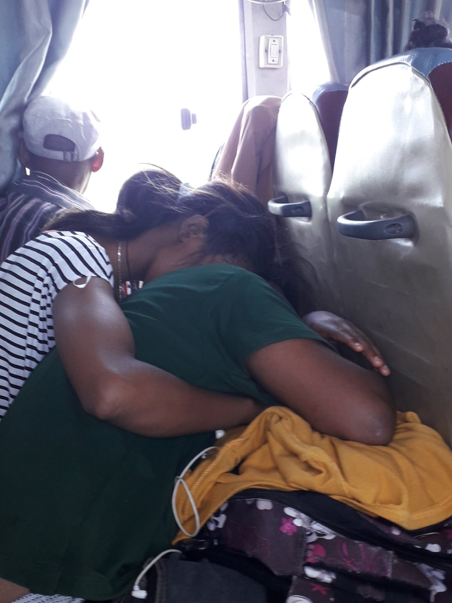
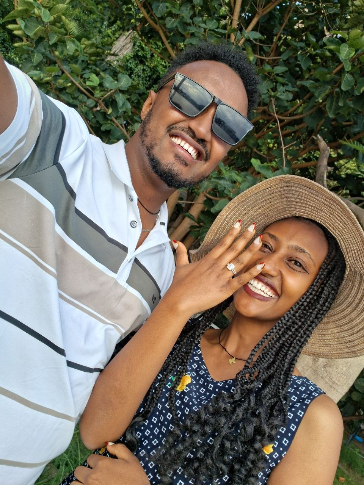
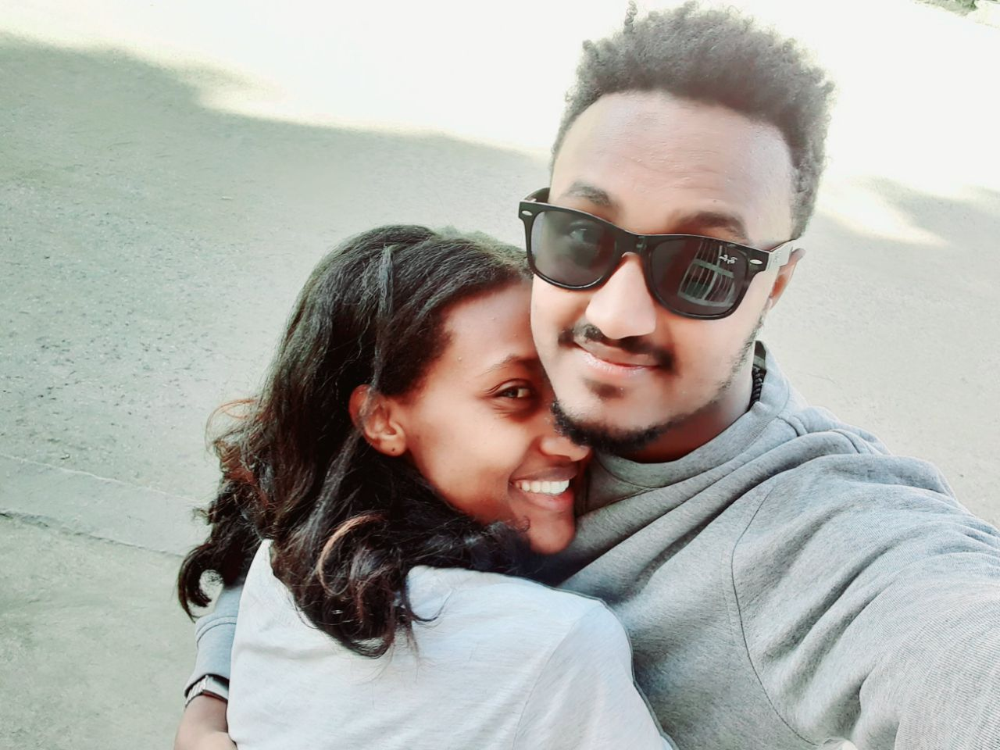
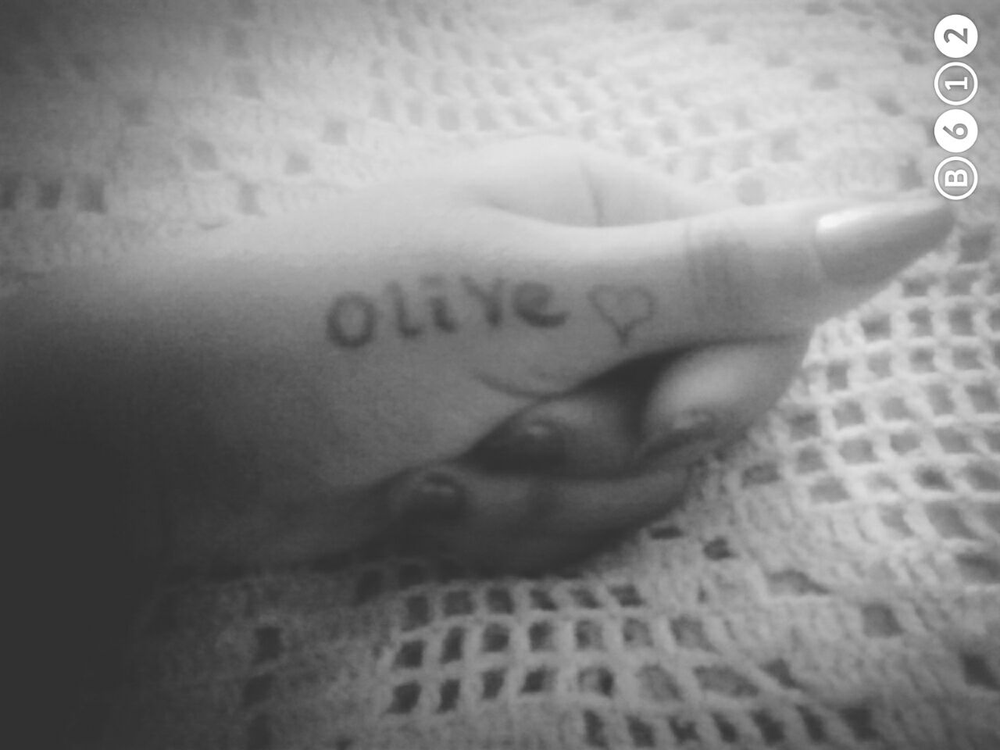
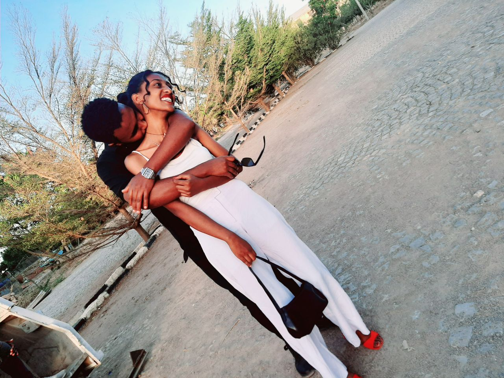

Where it all began
Two people waiting for a bus.
Dire Dawa. An ordinary moment. An ordinary day.
Neither of us knew that while we were waiting for that bus, something much bigger was beginning.
And somehow, that moment became the beginning of us.


Our first date
Dire Dawa University
We spent time together at Dire Dawa University, walked around, and went to Sport Cafe.
It wasn't about having the perfect place. It was about how easy it felt to be beside you.
“The place became special because you were there.”

My favorite place
Wherever you are.
It doesn't have to be a beautiful city or an expensive restaurant. If you're there, it becomes special to me.
The nights I remember
Walking together.
We spent so much of our time around Dire Dawa University, especially those nights when we walked together.
Talking. Laughing. Sometimes saying nothing at all.
Those ordinary nights became some of my favorite memories.
“Maybe the best memories are the quiet ones.”

A place we went together
Harar.
Another place. Another collection of memories.
Maybe one day we'll look back at all the places we've visited and realize that the destination was never really the important part.
It was always who I was with.
to keep

The moment I'll never forget
Debre Zeit
I had imagined the moment I would ask you to be part of my future.
But no imagination could really capture what it felt like to stand there and ask you to be part of my forever.
And you said yes. ❤️
That wasn't just a beautiful moment. It was the moment our story became the beginning of our forever.
The moments I keep
Us, in little pieces.
Every photo holds a moment I don't want to forget.

One of my favorite smiles.
And another reason I love our story.
I carried your name in my heart long before forever.
Your laughter, your smile, your arms around me — my kind of happiness.More memories added. And there is still room for every next chapter of our story. ❤️
The way you make me laugh
We laugh all the time.
If someone asked me to choose our funniest memory, I honestly wouldn't know what to choose.
Because somehow, the little jokes, random moments, and things that make no sense to anyone else become funny when we're together.
I hope we never stop laughing like that.
ha
ha
Even from far away
Distance changed the days.
It didn't change us.
Long distance has been one of the hardest parts of our relationship. There are days when I wish I could simply be beside you.
But distance has taught me something: love isn't measured by how close two people are.
Sometimes love is choosing each other even when you're far apart.
And my love for you stays strong.
Our song
Mn Konjo Binor
Teddy Afro
Some songs are just songs. And some songs become attached to memories, feelings, and people.
Play our song ↗A letter for you
My Samri,
There isn't one particular moment that I want to keep.
I want to keep all of them.
The first time we met. Our first date. Our walks at night. Our trips. Our laughter. Our difficult days. The days we missed each other. The moment I proposed. And all the tiny moments in between that maybe neither of us realized would become memories.
I don't want to forget any of them, because every moment I have spent with you has become a part of the person I am.
Samri, I love you so much.
More than these words can explain.
And if I could choose again—after everything we've been through, after every distance, after every difficult day, after every beautiful memory—
I would still choose you.
Today. Tomorrow. And every day after that.
Forever yours,
Oli ❤️
And this is only the beginning...
Our forever
starts here.
More places. More trips. More late-night walks. More laughter. More difficult days that we'll overcome together. More memories. More love.
I love you, Samri.
Read it again ↑